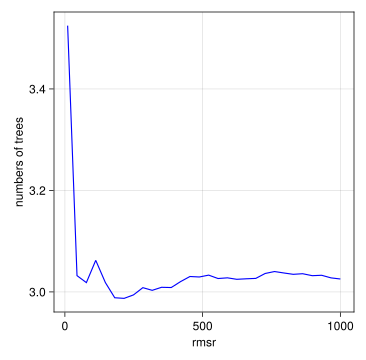

using MLJ
import DataFrames: DataFrame
using PrettyPrinting
using StableRNGs
using CairoMakie,AlgebraOfGraphics,MakieThemes
rng = StableRNG(512)StableRNGs.LehmerRNG(state=0x00000000000000000000000000000401)Random Forest :ref What is random forest?
((Crim = [0.00632, 0.02731, 0.02729, 0.03237, 0.06905, 0.02985, 0.08829, 0.14455, 0.21124, 0.17004 … 0.2896, 0.26838, 0.23912, 0.17783, 0.22438, 0.06263, 0.04527, 0.06076, 0.10959, 0.04741], Zn = [18.0, 0.0, 0.0, 0.0, 0.0, 0.0, 12.5, 12.5, 12.5, 12.5 … 0.0, 0.0, 0.0, 0.0, 0.0, 0.0, 0.0, 0.0, 0.0, 0.0], Indus = [2.31, 7.07, 7.07, 2.18, 2.18, 2.18, 7.87, 7.87, 7.87, 7.87 … 9.69, 9.69, 9.69, 9.69, 9.69, 11.93, 11.93, 11.93, 11.93, 11.93], NOx = [0.538, 0.469, 0.469, 0.458, 0.458, 0.458, 0.524, 0.524, 0.524, 0.524 … 0.585, 0.585, 0.585, 0.585, 0.585, 0.573, 0.573, 0.573, 0.573, 0.573], Rm = [6.575, 6.421, 7.185, 6.998, 7.147, 6.43, 6.012, 6.172, 5.631, 6.004 … 5.39, 5.794, 6.019, 5.569, 6.027, 6.593, 6.12, 6.976, 6.794, 6.03], Age = [65.2, 78.9, 61.1, 45.8, 54.2, 58.7, 66.6, 96.1, 100.0, 85.9 … 72.9, 70.6, 65.3, 73.5, 79.7, 69.1, 76.7, 91.0, 89.3, 80.8], Dis = [4.09, 4.9671, 4.9671, 6.0622, 6.0622, 6.0622, 5.5605, 5.9505, 6.0821, 6.5921 … 2.7986, 2.8927, 2.4091, 2.3999, 2.4982, 2.4786, 2.2875, 2.1675, 2.3889, 2.505], Rad = [1.0, 2.0, 2.0, 3.0, 3.0, 3.0, 5.0, 5.0, 5.0, 5.0 … 6.0, 6.0, 6.0, 6.0, 6.0, 1.0, 1.0, 1.0, 1.0, 1.0], Tax = [296.0, 242.0, 242.0, 222.0, 222.0, 222.0, 311.0, 311.0, 311.0, 311.0 … 391.0, 391.0, 391.0, 391.0, 391.0, 273.0, 273.0, 273.0, 273.0, 273.0], PTRatio = [15.3, 17.8, 17.8, 18.7, 18.7, 18.7, 15.2, 15.2, 15.2, 15.2 … 19.2, 19.2, 19.2, 19.2, 19.2, 21.0, 21.0, 21.0, 21.0, 21.0], Black = [396.9, 396.9, 392.83, 394.63, 396.9, 394.12, 395.6, 396.9, 386.63, 386.71 … 396.9, 396.9, 396.9, 395.77, 396.9, 391.99, 396.9, 396.9, 393.45, 396.9], LStat = [4.98, 9.14, 4.03, 2.94, 5.33, 5.21, 12.43, 19.15, 29.93, 17.1 … 21.14, 14.1, 12.92, 15.1, 14.33, 9.67, 9.08, 5.64, 6.48, 7.88]), [24.0, 21.6, 34.7, 33.4, 36.2, 28.7, 22.9, 27.1, 16.5, 18.9 … 19.7, 18.3, 21.2, 17.5, 16.8, 22.4, 20.6, 23.9, 22.0, 11.9])tree = machine(DecisionTreeRegressor(), X, y)
e = evaluate!(tree, resampling=Holdout(fraction_train=0.8),
measure=[rms, rmslp1])PerformanceEvaluation object with these fields: model, measure, operation, measurement, per_fold, per_observation, fitted_params_per_fold, report_per_fold, train_test_rows, resampling, repeats Extract: ┌──────────────────────────────────────┬───────────┬─────────────┬──────────┐ │ measure │ operation │ measurement │ per_fold │ ├──────────────────────────────────────┼───────────┼─────────────┼──────────┤ │ RootMeanSquaredError() │ predict │ 7.06 │ [7.06] │ │ RootMeanSquaredLogProportionalError( │ predict │ 0.328 │ [0.328] │ │ offset = 1) │ │ │ │ └──────────────────────────────────────┴───────────┴─────────────┴──────────┘
rng = StableRNG(5123) # for reproducibility
m = machine(forest, X, y)
r = range(forest, :n, lower=10, upper=1000)
curves = MLJ.learning_curve(m, resampling=Holdout(fraction_train=0.8, rng=rng),
range=r, measure=rms);[ Info: Training machine(DeterministicTunedModel(model = DeterministicEnsembleModel(model = DecisionTreeRegressor(max_depth = -1, …), …), …), …).
[ Info: Attempting to evaluate 30 models.
Evaluating over 30 metamodels: 0%[> ] ETA: N/AEvaluating over 30 metamodels: 3%[> ] ETA: 0:02:02Evaluating over 30 metamodels: 7%[=> ] ETA: 0:01:11Evaluating over 30 metamodels: 10%[==> ] ETA: 0:00:47Evaluating over 30 metamodels: 13%[===> ] ETA: 0:00:35Evaluating over 30 metamodels: 17%[====> ] ETA: 0:00:28Evaluating over 30 metamodels: 20%[=====> ] ETA: 0:00:23Evaluating over 30 metamodels: 23%[=====> ] ETA: 0:00:20Evaluating over 30 metamodels: 27%[======> ] ETA: 0:00:18Evaluating over 30 metamodels: 30%[=======> ] ETA: 0:00:16Evaluating over 30 metamodels: 33%[========> ] ETA: 0:00:14Evaluating over 30 metamodels: 37%[=========> ] ETA: 0:00:13Evaluating over 30 metamodels: 40%[==========> ] ETA: 0:00:12Evaluating over 30 metamodels: 43%[==========> ] ETA: 0:00:11Evaluating over 30 metamodels: 47%[===========> ] ETA: 0:00:10Evaluating over 30 metamodels: 50%[============> ] ETA: 0:00:09Evaluating over 30 metamodels: 53%[=============> ] ETA: 0:00:09Evaluating over 30 metamodels: 57%[==============> ] ETA: 0:00:08Evaluating over 30 metamodels: 60%[===============> ] ETA: 0:00:08Evaluating over 30 metamodels: 63%[===============> ] ETA: 0:00:07Evaluating over 30 metamodels: 67%[================> ] ETA: 0:00:06Evaluating over 30 metamodels: 70%[=================> ] ETA: 0:00:06Evaluating over 30 metamodels: 73%[==================> ] ETA: 0:00:05Evaluating over 30 metamodels: 77%[===================> ] ETA: 0:00:05Evaluating over 30 metamodels: 80%[====================> ] ETA: 0:00:04Evaluating over 30 metamodels: 83%[====================> ] ETA: 0:00:03Evaluating over 30 metamodels: 87%[=====================> ] ETA: 0:00:03Evaluating over 30 metamodels: 90%[======================> ] ETA: 0:00:02Evaluating over 30 metamodels: 93%[=======================> ] ETA: 0:00:01Evaluating over 30 metamodels: 97%[========================>] ETA: 0:00:01Evaluating over 30 metamodels: 100%[=========================] Time: 0:00:22let
ax=(width = 400, height = 400,xlabel="rmsr",ylabel="numbers of trees")
datalayer=data((parameter_values=curves.parameter_values,measurements=curves.measurements))
mappinglayer=mapping(:parameter_values,:measurements)
vislayer=visual(Lines,color=:blue)
plt=datalayer*mappinglayer*vislayer
draw(plt, axis=ax)
end
150 treestuned_forest = TunedModel(model=forest,
tuning=Grid(resolution=3),
resampling=CV(nfolds=6, rng=StableRNG(32)),
ranges=[r_sf, r_bf],
measure=rms)
m = machine(tuned_forest, X, y)
e = evaluate!(m, resampling=Holdout(fraction_train=0.8),
measure=[rms, rmslp1])
ePerformanceEvaluation object with these fields: model, measure, operation, measurement, per_fold, per_observation, fitted_params_per_fold, report_per_fold, train_test_rows, resampling, repeats Extract: ┌──────────────────────────────────────┬───────────┬─────────────┬──────────┐ │ measure │ operation │ measurement │ per_fold │ ├──────────────────────────────────────┼───────────┼─────────────┼──────────┤ │ RootMeanSquaredError() │ predict │ 4.03 │ [4.03] │ │ RootMeanSquaredLogProportionalError( │ predict │ 0.256 │ [0.256] │ │ offset = 1) │ │ │ │ └──────────────────────────────────────┴───────────┴─────────────┴──────────┘
(best_model = DeterministicEnsembleModel(model = DecisionTreeRegressor(max_depth = -1, …), …),
best_history_entry = (model = DeterministicEnsembleModel(model = DecisionTreeRegressor(max_depth = -1, …), …),
measure = StatisticalMeasuresBase.RobustMeasure{StatisticalMeasuresBase.FussyMeasure{StatisticalMeasuresBase.RobustMeasure{StatisticalMeasuresBase.Multimeasure{StatisticalMeasuresBase.SupportsMissingsMeasure{StatisticalMeasures.RootMeanSquaredErrorOnScalars}, Nothing, StatisticalMeasuresBase.RootMean{Int64}, typeof(identity)}}, Nothing}}[RootMeanSquaredError()],
measurement = [3.5723251233502418],
per_fold = [[2.4377206608277864, 2.4552950148236734, 4.836739514653333, 4.012460189148205, 3.4362767911283307, 3.6523657899762805]],),
history = NamedTuple{(:model, :measure, :measurement, :per_fold), Tuple{MLJEnsembles.DeterministicEnsembleModel{MLJDecisionTreeInterface.DecisionTreeRegressor}, Vector{StatisticalMeasuresBase.RobustMeasure{StatisticalMeasuresBase.FussyMeasure{StatisticalMeasuresBase.RobustMeasure{StatisticalMeasuresBase.Multimeasure{StatisticalMeasuresBase.SupportsMissingsMeasure{StatisticalMeasures.RootMeanSquaredErrorOnScalars}, Nothing, StatisticalMeasuresBase.RootMean{Int64}, typeof(identity)}}, Nothing}}}, Vector{Float64}, Vector{Vector{Float64}}}}[(model = DeterministicEnsembleModel(model = DecisionTreeRegressor(max_depth = -1, …), …), measure = [RootMeanSquaredError()], measurement = [3.5723251233502418], per_fold = [[2.4377206608277864, 2.4552950148236734, 4.836739514653333, 4.012460189148205, 3.4362767911283307, 3.6523657899762805]]), (model = DeterministicEnsembleModel(model = DecisionTreeRegressor(max_depth = -1, …), …), measure = [RootMeanSquaredError()], measurement = [5.504955090715008], per_fold = [[4.507900087364325, 4.232455406474551, 7.464893182190745, 5.422170771419789, 4.684352444767937, 6.0397977212004115]]), (model = DeterministicEnsembleModel(model = DecisionTreeRegressor(max_depth = -1, …), …), measure = [RootMeanSquaredError()], measurement = [4.584636277112874], per_fold = [[3.623227634995052, 3.328979269391013, 6.1329351142953135, 4.695314317120336, 4.081675860297182, 5.059933413439365]]), (model = DeterministicEnsembleModel(model = DecisionTreeRegressor(max_depth = -1, …), …), measure = [RootMeanSquaredError()], measurement = [4.956027830320225], per_fold = [[3.8979140547535294, 3.563993570884703, 6.774074802206927, 4.986644455552096, 4.345650377490088, 5.462293118179693]]), (model = DeterministicEnsembleModel(model = DecisionTreeRegressor(max_depth = -1, …), …), measure = [RootMeanSquaredError()], measurement = [3.7448294127266855], per_fold = [[2.7225551229467406, 2.574255403536769, 4.980250770291832, 4.062080380041018, 3.4303510269904365, 4.132902309660448]]), (model = DeterministicEnsembleModel(model = DecisionTreeRegressor(max_depth = -1, …), …), measure = [RootMeanSquaredError()], measurement = [4.140635649381917], per_fold = [[3.2879896695709068, 2.824466620067375, 5.33283310581115, 4.699863164228081, 3.524592461475701, 4.603575780861982]]), (model = DeterministicEnsembleModel(model = DecisionTreeRegressor(max_depth = -1, …), …), measure = [RootMeanSquaredError()], measurement = [4.237567331195985], per_fold = [[4.333745981618892, 3.504123903998363, 5.468348362153919, 4.7402739799589515, 3.619411358019858, 3.3320564364619085]]), (model = DeterministicEnsembleModel(model = DecisionTreeRegressor(max_depth = -1, …), …), measure = [RootMeanSquaredError()], measurement = [4.054858791361992], per_fold = [[3.015781185953446, 2.727890740913021, 5.428915080156555, 4.3168591149731315, 3.5169248700755973, 4.6569623375088485]]), (model = DeterministicEnsembleModel(model = DecisionTreeRegressor(max_depth = -1, …), …), measure = [RootMeanSquaredError()], measurement = [3.9239822360867804], per_fold = [[3.04053043825184, 3.0521492534485497, 5.040995039547546, 4.414404222009852, 3.71536924263147, 3.8930658524684496]])],
best_report = (measures = Any[],
oob_measurements = missing,),
plotting = (parameter_names = ["model.n_subfeatures", "bagging_fraction"],
parameter_scales = [:linear, :linear],
parameter_values = Any[6 1.0; 1 0.4; … ; 6 0.4; 12 0.7],
measurements = [3.5723251233502418, 5.504955090715008, 4.584636277112874, 4.956027830320225, 3.7448294127266855, 4.140635649381917, 4.237567331195985, 4.054858791361992, 3.9239822360867804],),)res = r.plotting
table=(vals_b = res.parameter_values[:, 1],
vals_k = res.parameter_values[:, 2],
measurement=res.measurements
)
datalayer=data(table)
mappinglayer=mapping(:vals_b,:vals_k,:measurement,color=:measurement)
vislayler=visual(Tricontourf,colormap = :batlow)
ax=(width = 400, height = 400)
plt=datalayer*mappinglayer*vislayler
draw(plt,axis=ax)